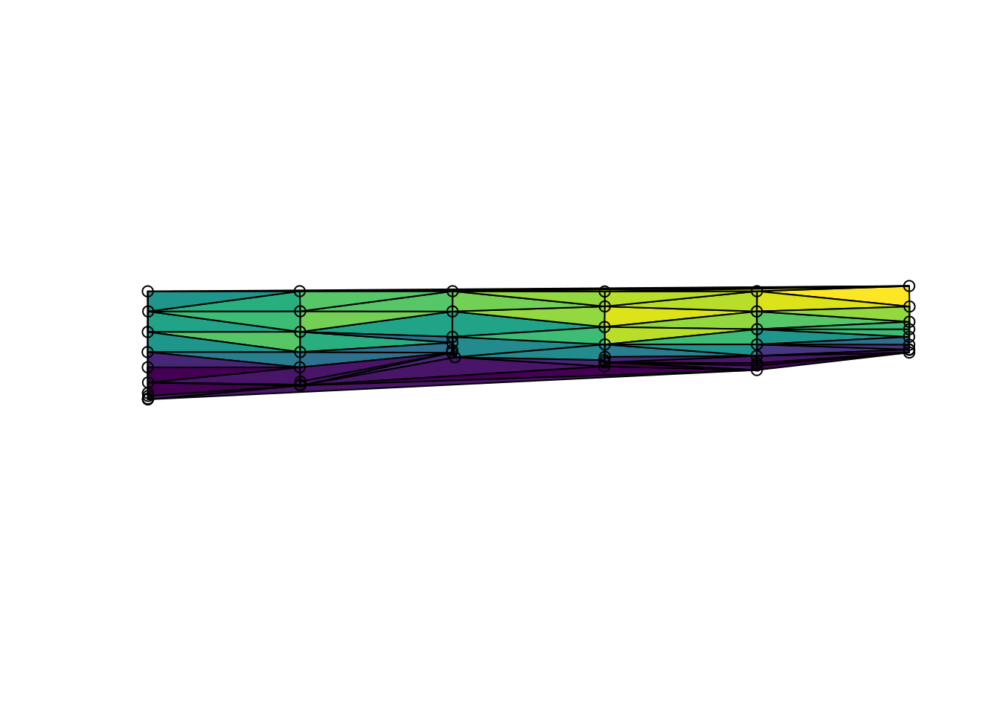

Interpolating irregular data
Michael D. Sumner
2017-12-14
Setup
Define utility functions for repeated usage, and load required packages.
scl <- function(x) (x - min(x, na.rm = TRUE))/diff(range(x, na.rm = TRUE))
library(guerrilla)
library(raster)
#> Loading required package: sp
library(rgdal)
#> rgdal: version: 1.2-16, (SVN revision 701)
#> Geospatial Data Abstraction Library extensions to R successfully loaded
#> Loaded GDAL runtime: GDAL 2.2.2, released 2017/09/15
#> Path to GDAL shared files: /usr/share/gdal/2.2
#> GDAL binary built with GEOS: TRUE
#> Loaded PROJ.4 runtime: Rel. 4.9.3, 15 August 2016, [PJ_VERSION: 493]
#> Path to PROJ.4 shared files: (autodetected)
#> Linking to sp version: 1.2-5
library(gstat)
library(fields)
#> Loading required package: spam
#> Loading required package: dotCall64
#> Loading required package: grid
#> Spam version 2.1-1 (2017-07-02) is loaded.
#> Type 'help( Spam)' or 'demo( spam)' for a short introduction
#> and overview of this package.
#> Help for individual functions is also obtained by adding the
#> suffix '.spam' to the function name, e.g. 'help( chol.spam)'.
#>
#> Attaching package: 'spam'
#> The following objects are masked from 'package:base':
#>
#> backsolve, forwardsolve
#> Loading required package: maps
library(akima)
library(palr)Read the zooplankton data.
library(readxl)
bw <- read_excel(system.file("extdata", "BW-Zooplankton_env.xls", package= "irreg"))
summary(bw[,1:10])
#> Station Lat Lon depth
#> Min. : 4.00 Min. :-69.11 Min. :29.98 Min. : 175
#> 1st Qu.: 37.25 1st Qu.:-66.84 1st Qu.:40.00 1st Qu.:1523
#> Median : 60.00 Median :-65.84 Median :55.06 Median :3065
#> Mean : 64.36 Mean :-65.46 Mean :54.60 Mean :2791
#> 3rd Qu.:100.25 3rd Qu.:-64.09 3rd Qu.:70.00 3rd Qu.:4114
#> Max. :122.00 Max. :-61.66 Max. :80.02 Max. :5075
#> temp sal chl a mg/m2) ASC (km)
#> Min. :-1.6712 Min. :33.93 Min. : 29.60 Min. :-39.600
#> 1st Qu.:-1.4726 1st Qu.:34.14 1st Qu.: 44.91 1st Qu.: 4.125
#> Median :-1.1332 Median :34.25 Median : 53.00 Median :114.950
#> Mean :-0.6755 Mean :34.22 Mean : 76.80 Mean :187.506
#> 3rd Qu.: 0.1435 3rd Qu.:34.31 3rd Qu.: 85.57 3rd Qu.:330.550
#> Max. : 0.8815 Max. :34.42 Max. :352.51 Max. :775.500
#> ice free days Total abundance
#> Min. :-35.322 Min. : 459.3
#> 1st Qu.: 6.108 1st Qu.: 4425.9
#> Median : 33.153 Median : 11346.1
#> Mean : 33.139 Mean : 23609.3
#> 3rd Qu.: 62.901 3rd Qu.: 27417.3
#> Max. :101.420 Max. :116715.8
lonlat <- as.matrix(bw[, c("Lon", "Lat")])
val <- bw$temp
minmax <- c(-1.8, 40)
rval <- pretty(val, n = 15)
cols <- sstPal(length(rval) - 1)Plot the temperature data.
plot(val)
Create a grid to interpolate onto, this can be used repeatedly for many methods.
library(raster)
r0 <- defaultgrid(lonlat)Simplistic rasterization
The most simple thing possible is to define a grid and simply populate that with values from points. Extend the grid by a small amount.
rasgrid <- function(xy, value, grid = NULL, ...) {
if (is.null(grid)) grid <- defaultgrid(xy)
rasterize(xy, grid, field = value, ...)
}
lastgrid <- rasgrid(lonlat, val, r0)
plot(lastgrid)
the main impact on the result here is the effect of pixel size, and the behaviour when there is more than one value per pixel. It really depends on the data compare brokewest with saz?
Thin plate spline interpolation.
library(fields)
tpsfun <- function(xy, value, grid = NULL, ...) {
if (is.null(grid)) grid <- defaultgrid(xy)
model <- Tps(xy, value, lon.lat = isLonLat(grid), method = "REML")
interpolate(grid, model, ...)
}
tpsgrid <- tpsfun(lonlat, val)
tpsgrid <- clamp(tpsgrid, minmax[1], minmax[2])
## this shows the error
tpsSEgrid <- tpsfun(lonlat, val, r0, fun = predictSE)
plot(tpsgrid)
Bilinear triangulation.
This is identical to Matlab’s griddata(, method = “bilinear”)
library(geometry)
#> Loading required package: magic
#> Loading required package: abind
#>
#> Attaching package: 'magic'
#> The following object is masked from 'package:raster':
#>
#> shift
library(sp)
library(guerrilla)
trigrid <- tri_fun(lonlat, val, r0)
#>
#> PLEASE NOTE: As of version 0.3-5, no degenerate (zero area)
#> regions are returned with the "Qt" option since the R
#> code removes them from the triangulation.
#> See help("delaunayn").
plot(trigrid)
Delaunay and Diriclet
What about Delaunay and Dirichlet without interpolation?
## input must be ppp
library(spatstat)
#> Loading required package: spatstat.data
#> Loading required package: nlme
#>
#> Attaching package: 'nlme'
#> The following object is masked from 'package:raster':
#>
#> getData
#> Loading required package: rpart
#>
#> spatstat 1.54-0 (nickname: 'Vacuous Mission Statement')
#> For an introduction to spatstat, type 'beginner'
#>
#> Attaching package: 'spatstat'
#> The following object is masked from 'package:magic':
#>
#> shift
#> The following object is masked from 'package:palr':
#>
#> col2hex
#> The following object is masked from 'package:gstat':
#>
#> idw
#> The following objects are masked from 'package:raster':
#>
#> area, rotate, shift
library(maptools)
#> Checking rgeos availability: TRUE
rasterToOwin <- function(x) {
owin(c(xmin(x), xmax(x)), c(ymin(x), ymax(x)))
}
colfun <- viridis::viridis
rbase <- r0
d <- bw
xname <- "Lon"
yname <- "Lat"
varname <- "temp"
pObj <- ppp(d[[xname]], d[[yname]], window = rasterToOwin(rbase), marks = d[[varname]])
lltes<-delaunay(pObj)
#>
#> PLEASE NOTE: The components "delsgs" and "summary" of the
#> object returned by deldir() are now DATA FRAMES rather than
#> matrices (as they were prior to release 0.0-18).
#> See help("deldir").
#>
#> PLEASE NOTE: The process that deldir() uses for determining
#> duplicated points has changed from that used in version
#> 0.0-9 of this package (and previously). See help("deldir").
meanval <- numeric(length(lltes[[3]]))
for (i in seq_along(meanval)) {
meanval[i] <- mean(marks(pObj[lltes[[3]][[i]]]))
}
plot(as(lltes, "SpatialPolygons"), col = colfun(20)[scl(meanval)*19 + 1])
points(d[,c(xname, yname)])
lltes<-dirichlet(pObj)
meanval <- numeric(length(lltes[[3]]))
for (i in seq_along(meanval)) {
meanval[i] <- mean(marks(pObj[lltes[[3]][[i]]]))
}
plot(as(lltes, "SpatialPolygons"), col = colfun(20)[scl(meanval)*19 + 1])
points(d[,c(xname, yname)])
Grid interpolation from Dirichlet or Delaunay. This is much slower than the triangulate and cart2bary method above (Mike needs to illustrate this)
fcs.dir <- facets(pObj, nx = ncol(rbase) , ny = nrow(rbase), method = "dirichlet")
#>
#> number of triangles = 50
#>
#> 1, 2, 3, 4, 5, 6, 7, 8, 9, 10, 11, 12, 13, 14, 15, 16, 17, 18, 19, 20, 21, 22, 23, 24, 25, 26, 27, 28, 29, 30, 31, 32, 33, 34, 35, 36, 37, 38,
#> 39, 40, 41, 42, 43, 44, 45, 46, 47, 48, 49, 50.
plot(rasterFromXYZ(as.data.frame(fcs.dir)))
fcs.del <- facets(pObj, nx = ncol(rbase) , ny = nrow(rbase), method = "delaunay")
#>
#> number of triangles = 91
#>
#> 1, 2, 3, 4, 5, 6, 7, 8, 9, 10, 11, 12, 13, 14, 15, 16, 17, 18, 19, 20, 21, 22, 23, 24, 25, 26, 27, 28, 29, 30, 31, 32, 33, 34, 35, 36, 37, 38,
#> 39, 40, 41, 42, 43, 44, 45, 46, 47, 48, 49, 50, 51, 52, 53, 54, 55, 56, 57, 58, 59, 60, 61, 62, 63, 64, 65, 66, 67, 68, 69, 70, 71, 72, 73, 74, 75, 76,
#> 77, 78, 79, 80, 81, 82, 83, 84, 85, 86, 87, 88, 89, 90, 91.
plot(rasterFromXYZ(as.data.frame(fcs.del)))
IDW
library(gstat)
idwfun <- function(xy, value, grid = NULL, ...) {
if (is.null(grid)) grid <- defaultgrid(xy)
d <- data.frame(lon = xy[,1], lat = xy[,2], value = value)
coordinates(d) <- ~lon+lat
proj4string(d) <- proj4string(grid)
## inverse distance weighted (IDW)
mg <- gstat(id = "value", formula = value~1, locations = c("lon", "lat"), data=d, ...)
interpolate(grid, mg)
}
dw <- idwfun(lonlat, val, r0)
#> [inverse distance weighted interpolation]
dw <- idwfun(lonlat, val, r0, set=list(idp = 1.5))
#> [inverse distance weighted interpolation]
plot(dw);contour(trigrid, add = TRUE)
Kriging
krifun <- function(xy, value, grid = NULL, ...) {
if (is.null(grid)) grid <- defaultgrid(xy)
d <- data.frame(lon = xy[,1], lat = xy[,2], value = value)
coordinates(d) <- ~lon+lat
proj4string(d) <- proj4string(grid)
v <- variogram(value~1, d)
m <- fit.variogram(v, vgm(1, "Sph", 150, 1))
gOK <- gstat(NULL, "value", value~1, d, model=m)
interpolate(grid, gOK)
}
krigrid <- krifun(lonlat, val, grid = r0)
#> [using ordinary kriging]
plot(krigrid)
fields
# out <- as.image(d[,varname], x = d[,c(xname, yname)], nx = 25, ny = 25)
# plot(raster(out))
# look<- image.smooth( out, theta= 2.5)
# plot(raster(look))
fsmfun <- function(xy, value, grid = NULL) {
if (is.null(grid)) grid <- defaultgrid(xy)
nrow(grid) <- ncol(grid) ## apparently required
out <- as.image(value, x = xy, nx = nrow(grid), ny = ncol(grid))
raster(image.smooth( out, theta= 2.5) )
}
fsmgrid <- fsmfun(lonlat, val, r0)
plot(fsmgrid)
Akima
library(akima)
akifun <- function(xy, value, grid = NULL, ...) {
if (is.null(grid)) grid <- defaultgrid(xy)
x0 <- xFromCol(grid)
y0 <- yFromRow(grid)
aklin <- interp(xy[,1], xy[,2], value,
x0, y0, ...)
raster(list(x = aklin$x, y = rev(aklin$y), z = aklin$z[,ncol(aklin$z):1]))
}
akigrid <- akifun(lonlat, val, grid = r0)
plot(akigrid)
Hexagons?
(See hexbin, spatstat).
Along-track distance
Previously we used Latitude as our x-axis, this is not very sensible since the track visits the same latitudes at different longitudes. As a simple improvement let’s build an along-track axis.
# lonname <- "Longitude [degrees_east]"
# latname <- "Latitude [degrees_north]"
# tname <- "yyyy-mm-ddThh:mm:ss.sss"
# d2 <- szt[asub, c(xname, yname, lonname, latname, varname, tname)]
# d2$date <- as.POSIXct(d2[[tname]])
# d2 <- d2[order(d2$date, d2$Depth), ]
# library(geosphere)
# dists <- numeric(nrow(d2)-1)
# for (i in seq_along(dists)) {
# dists[i] <- spDistsN1(as.matrix(d2[i, c(lonname, latname)]), as.matrix(d2[i+1, c(lonname, latname), drop = FALSE]), longlat = TRUE)
# }
# d2$dist <- cumsum(c(0, dists))So now.
# xname <- "dist"
# d <- d2
# ex <- extent(range(d[, xname]), range(d[, yname])) * 1.2
# rbase <- raster(ex, ncols = 25, nrows = 25)
# rlast <- rasterize(d[,c(xname, yname)], rbase, field = d[,varname])
#
# rmean <- rasterize(d[,c(xname, yname)], rbase, field = d[,varname], fun = mean)
#
# rval <- pretty(d[,varname], n = 15)
#
# plot(rlast, col = colfun(length(rval) - 1), breaks = rval, asp = 1)
# points(d[, c(xname, yname)], cex = 0.2)
# plot(rmean, col = colfun(length(rval) - 1), breaks = rval, asp = 1)
# points(d[, c(xname, yname)], cex = 0.2)
#
#
# p <- Tps(d[, c(xname, yname)], d[,varname])
# rp <- interpolate(rbase, p)
# rpse <- interpolate(rbase, p, fun = predictSE)
# plot(rp, col = colfun(length(rval) - 1), breaks = rval, asp = 1)
# points(d[, c(xname, yname)], cex = 0.2)
# plot(rpse, col = colfun(length(rval) - 1), breaks = rval, asp = 1)
# points(d[, c(xname, yname)], cex = 0.2)
#
#
# ## input must be ppp
# library(spatstat)
# library(maptools)
# rasterToOwin <- function(x) {
# owin(c(xmin(x), xmax(x)), c(ymin(x), ymax(x)))
# }
# pObj <- ppp(d[,xname], d[,yname], window = rasterToOwin(rbase), marks = d[, varname])
#
# lltes<-delaunay(pObj)
# meanval <- numeric(length(lltes[[3]]))
# for (i in seq_along(meanval)) {
# meanval[i] <- mean(marks(pObj[lltes[[3]][[i]]]))
# }
# plot(as(lltes, "SpatialPolygons"), col = colfun(20)[scl(meanval)*19 + 1])
# points(d[,c(xname, yname)])
#
#
# lltes<-dirichlet(pObj)
# meanval <- numeric(length(lltes[[3]]))
# for (i in seq_along(meanval)) {
# meanval[i] <- mean(marks(pObj[lltes[[3]][[i]]]))
# }
# plot(as(lltes, "SpatialPolygons"), col = colfun(20)[scl(meanval)*19 + 1])
# points(d[,c(xname, yname)])
#
#
# source("maybetin.R")
#
# fcs.dir <- facets(pObj, nx = ncol(rbase) , ny = nrow(rbase), method = "dirichlet")
# plot(rasterFromXYZ(as.data.frame(fcs.dir)))
# fcs.del <- facets(pObj, nx = ncol(rbase) , ny = nrow(rbase), method = "delaunay")
# plot(rasterFromXYZ(as.data.frame(fcs.del)))
#
# library(gstat)
#
# dsp <- d
# coordinates(dsp) <- c(xname, yname)
# ## inverse distance weighted (IDW)
# mg <- gstat(id = "Al", formula = Al~1, locations = c(xname, yname), data=dsp,
# nmax=7, set=list(idp = .5))
# z <- interpolate(rbase, mg)
# plot(z)
#
# ## with log
# v <- variogram(log(Al)~1, dsp)
# m <- fit.variogram(v, vgm(1, "Sph", 300, 1))
# gOK <- gstat(NULL, "logAl", log(Al)~1, dsp, model=m)
# OK <- interpolate(rbase, gOK)
# plot(OK)
#
# ## without log
# v <- variogram(Al~1, dsp)
# m <- fit.variogram(v, vgm(1, "Sph", 300, 1))
# gOK <- gstat(NULL, "Al", Al~1, dsp, model=m)
# OK <- interpolate(rbase, gOK)
# plot(OK)
#
#
# ## Gaussian
# v <- variogram(Al~1, dsp)
# m <- fit.variogram(v, vgm(1, "Gau", 300, 1))
# gOK <- gstat(NULL, "Al", Al~1, dsp, model=m)
# OK <- interpolate(rbase, gOK)
# plot(OK)
#
# out <- as.image(d[,varname], x = d[,c(xname, yname)], nx = 25, ny = 25)
# plot(raster(out))
# look<- image.smooth( out, theta= 2.5)
# plot(raster(look))
#
#
# library(akima)
#
# x0 <- xFromCol(rbase)
# y0 <- yFromRow(rbase)
#
# aklin <- interp(d[,xname], d[,yname], d[,varname],
# x0, y0)
# # aksplin <-interp(d[,xname], d[,yname], d[,varname],
# # x0, y0, linear = FALSE, extrap = TRUE)
# rlin <- raster(list(x = aklin$x, y = rev(aklin$y), z = t(aklin$z[,ncol(aklin$z):1])))
# ##rsplin <- raster(aksplin)
# plot(rlin, col = colfun(length(rval) - 1), breaks = rval, asp = 1)
#points(d[, c(xname, yname)], cex = 0.2)